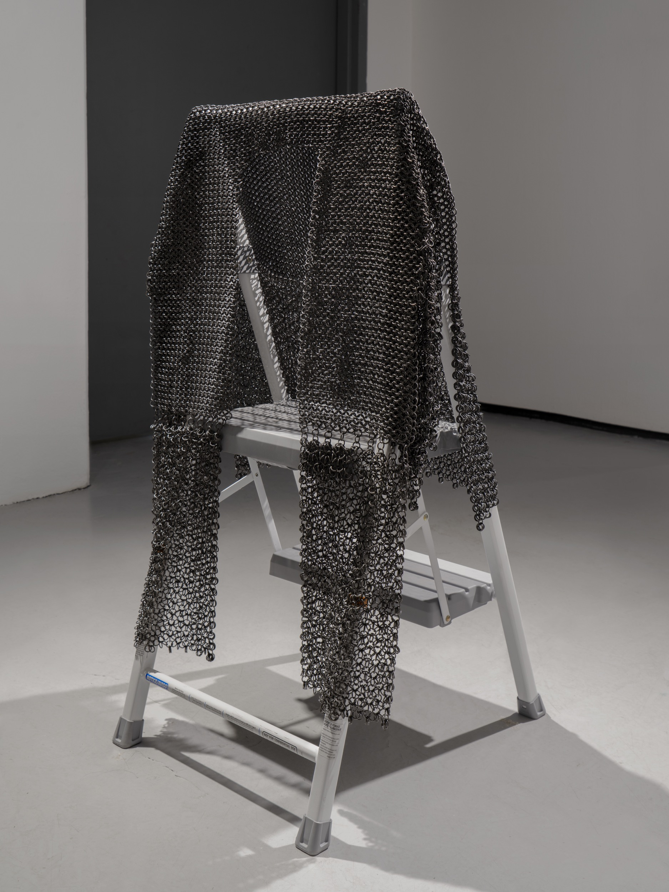
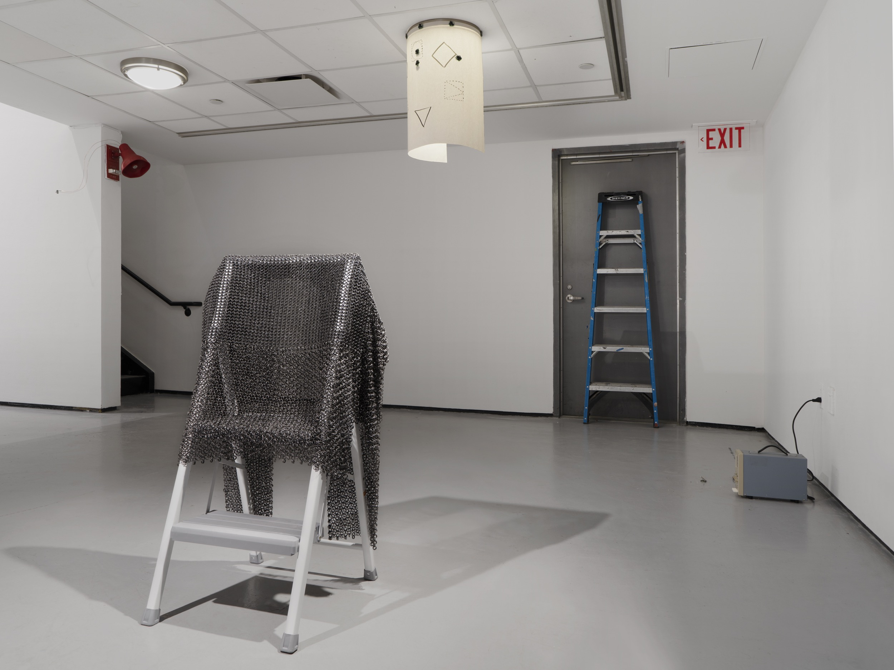
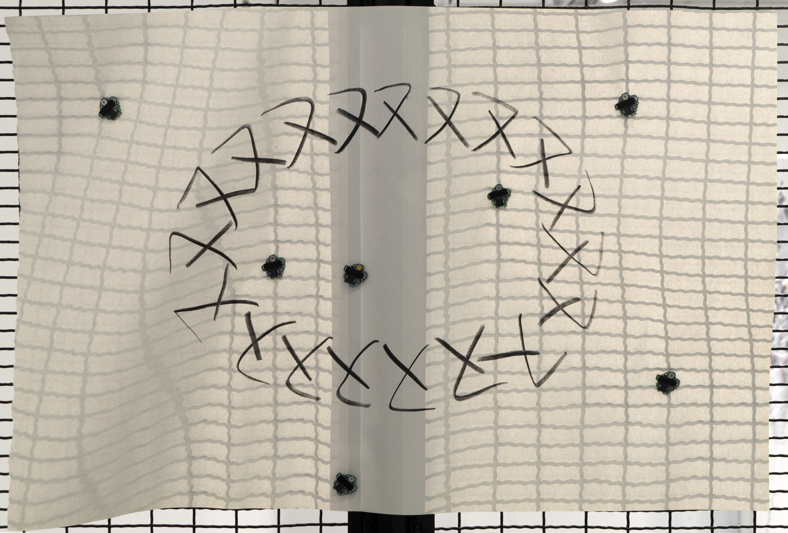
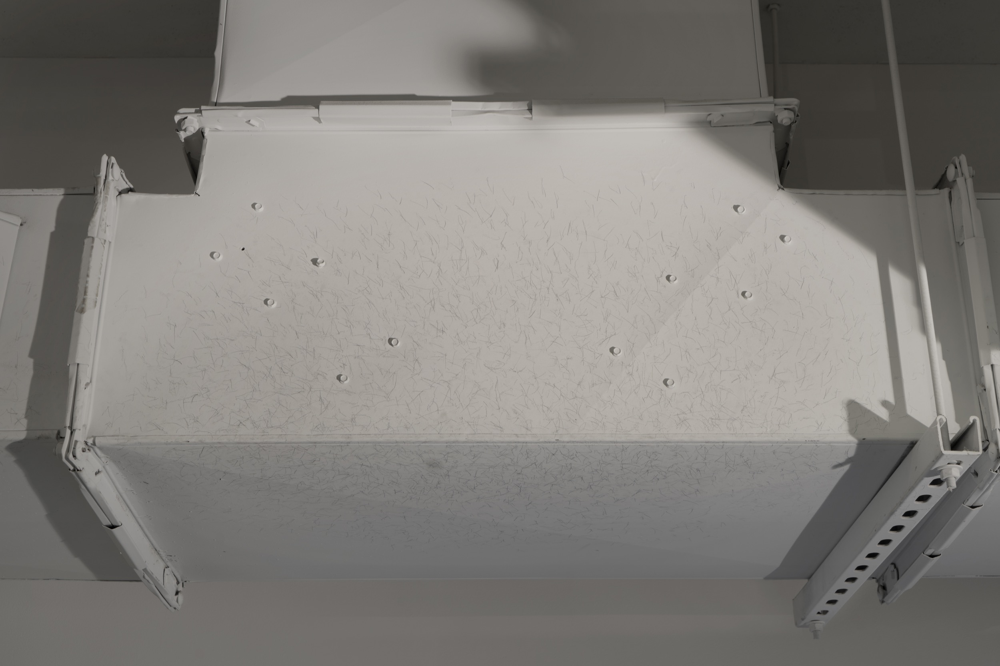
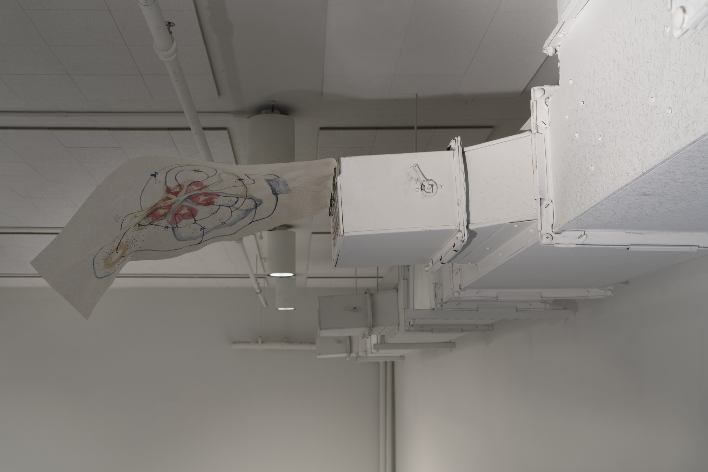
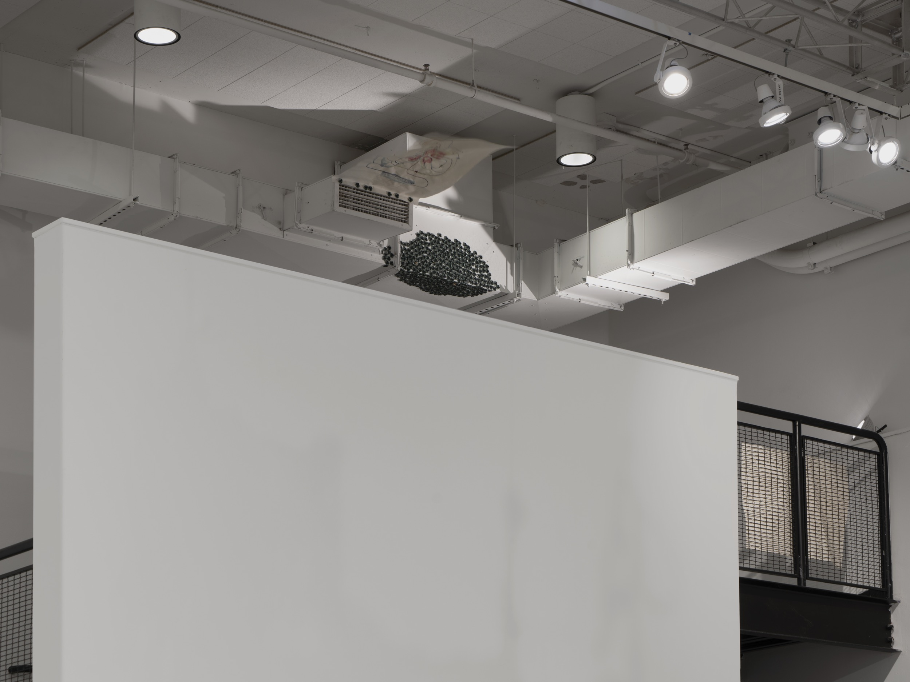
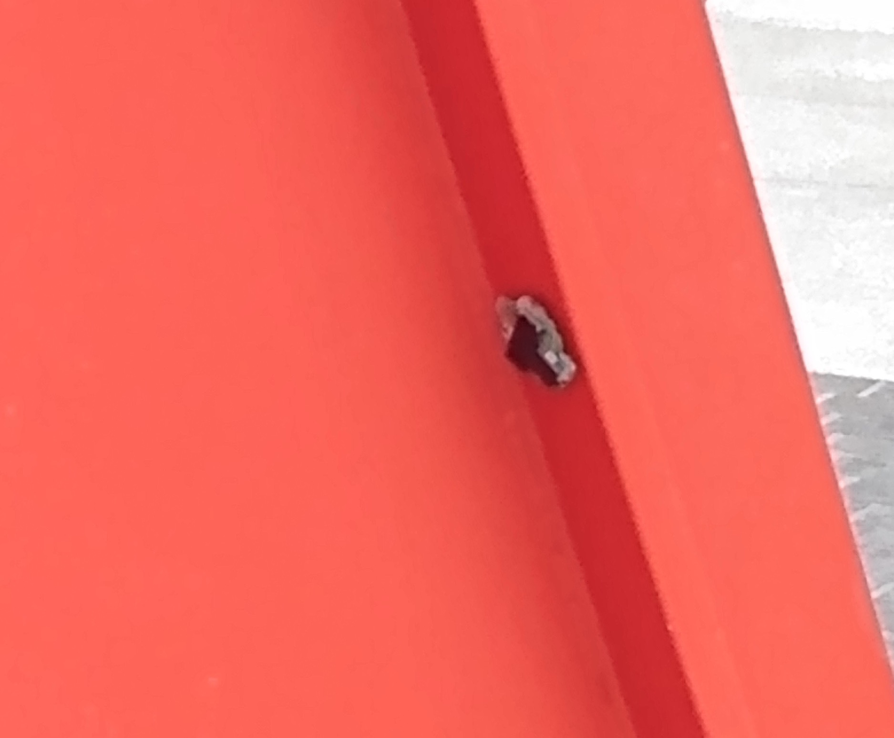
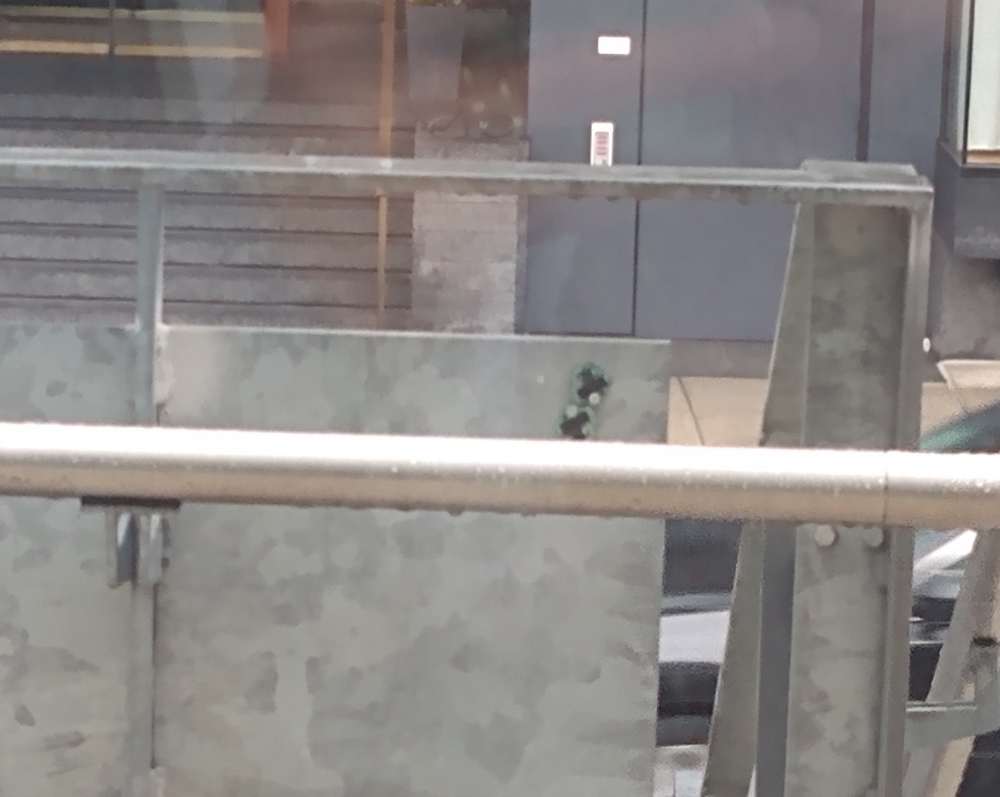
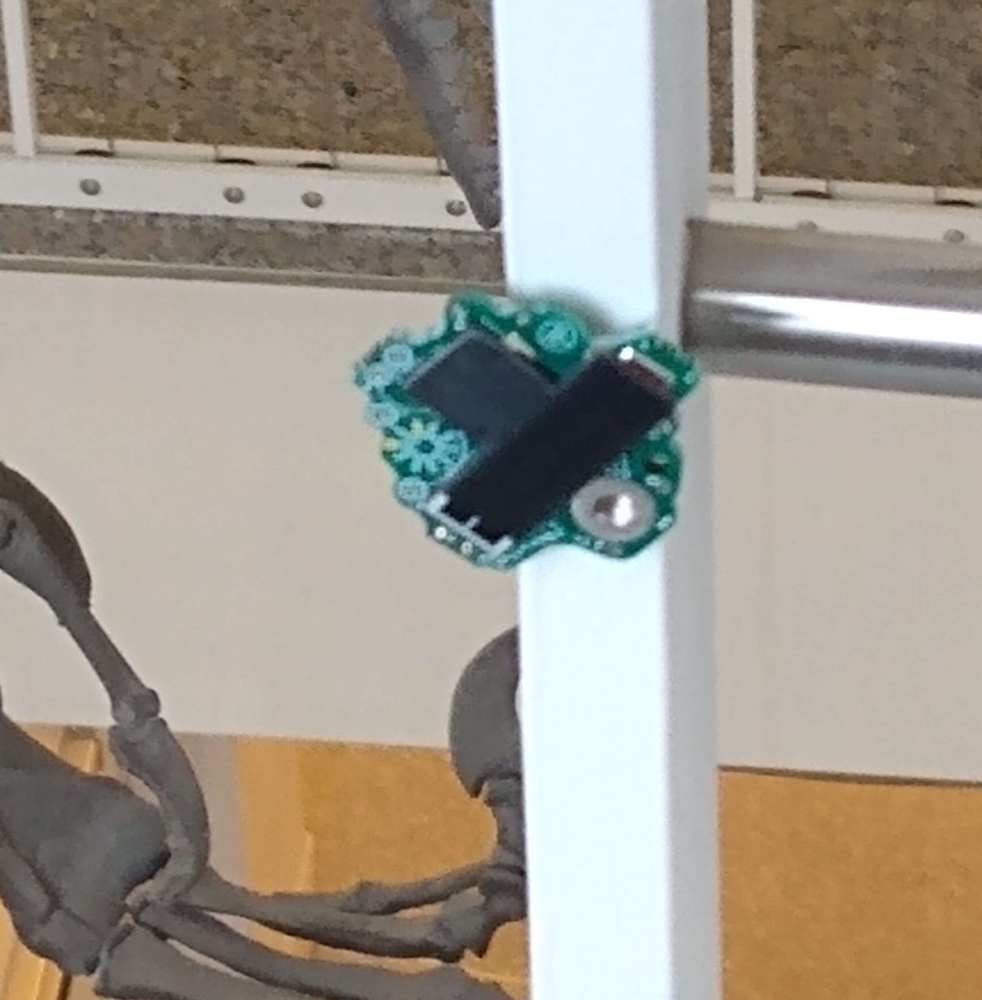

くっつき虫 - ( sticky bug) - gregarious swarm
くっつき虫 - ( sticky bug) - gregarious swarm
The stay is a name of a installation - activities being witnessed revolving around migrations of solar electronic bugs and the caretaker on a chosen site.
Activities are pronounced and recorded as “instances” in following categories; 1) Zone - formations of bugs 2) formation of practice wear 道着 made of chainmail 3) impression and the markings 4) chimeras 5) notational drawing 6) facilitative tool.
Many instances continuously change during the time of the exhibition. Documented series of instance here were recorded as of 3/28/2022 and was part of thesis exhibition at Yale School of Art. Particular instance reoccurs and others are recorded only once; some of are only witnessed in a particular time of the day.
This gregarious swarm is called くっつき虫 - ( sticky bug) and there are 441 of them as of 3/25/2022. (derived from the parent project - electronic entomology) This specie possess on each of their body, small earth magnet which affords them to perch on any steel objects. Caretaker come into the site and wear the practice wear made of chainmail to equip the body with the swarm. Swarm is walked to a new location, lands to new steal object which then become a new instance. This migration happens everyday. Since the exhibition, some of them through various hands, migrated to steel objects of public spaces and private homes.


▼

"In the shooter hypothesis, a good marksman shoots at a target, creating a hole every ten centimeters. Now suppose the surface of the target is inhabited by intelligent, two-dimensional creatures. Their scientists, after observing the universe, discover a great law: “There exists a hole in the universe every ten centimeters.” They have mistaken the result of the marksman’s momentary whim for an unalterable law of the universe. The farmer hypothesis, on the other hand, has the flavor of a horror story: Every morning on a turkey farm, the farmer comes to feed the turkeys. A scientist turkey, having observed this pattern to hold without change for almost a year, makes the following discovery: “Every morning at eleven, food arrives.” On the morning of Thanksgiving, the scientist announces this law to the other turkeys. But that morning at eleven, food doesn’t arrive; instead, the farmer comes and kills the entire flock" (Liu 113)
      image credit Jackie Furtado{kind=link}
{kind=link}
{kind=link}
{kind=link}
{kind=link}
{kind=link}
  
{kind=link}
{kind=link}
{kind=link}
list of instance
The stay
List of Instance observed as of 3/28/2022——
Title
Description
Location
——
くっつき虫 - ( sticky bug) - gregarious swarm
441 (as of 3/25/2022) solar electronic sounder
varies
Zone 0 - transport
solar bug formation on practice wear made of chainmail
varies
Zone 1 - landmark
solar bug formation on HVAC system
Basement staircase top landing
Zone 1 - landmark impression
Drawing on HVAC system
Basement staircase top landing
Zone 2 - alignment
solar bug formation on wall
Plaza staircase
Zone 2 - alignment impression
Drawing on wall
Plaza staircase
Zone 3 - cornered
solar bug formation on HVAC system
Peanut room
Zone 3 - cornered impression
Drawing on HVAC system
Peanut room
Zone 4 - antenna
solar bug formation
Peanut room
Zone 5 - lookout
solar bug formation on HVAC system
Copper Room
Zone 5 - lookout impression
Drawing on HVAC system
Copper Room
Zone 6 - welcome
solar bug formation on HVAC system
Copper Room
Zone 6 - welcome impression
Drawing on HVAC system
Copper Room
Zone 7 - constant
solar bug on track lights
Track lights on hallway, copper room, peanut room, plaza, basement
Zone 8 - death
solar bug dead in ceiling light
Plaza
Zone 9 - loop
solar bug formation on HVAC vent
HVAC vent in Plaza
Zone 9 - loop impression
Drawing on HVAC vent
HVAC vent in Plaza
Zone 10 - wait
solar bug formation on emergency door
Emergency door in Plaza
Zone 11 - switch
solar bug formation on electrical switch
Electrical switch in Plaza
Zone 12 - camper
solar bug formation on staircase
Staircase in front of the building
Zone 13 - hello
solar bug in Peabody collection
Yale Peabody entomology collection cabinet
Zone 14 - early sign
solar bug formation on Gallows and Lollipops, 1960 Alexander Calder
Beinecke plaza
道着 - practice wear - formation 0 carrier
chainmail worn
variable
道着 - practice wear - formation 1 charge
chainmail draped over staircase ledge
Plaza staircase top landing
道着 - practice wear - formation 2 head
chainmail collected as a mass
Plaza staircase top landing
道着 - practice wear - formation 3 nipple
chainmail formed on the ground
Plaza floor
道着 - practice wear - formation 4 crawl
chainmail formed on the ground
Plaza floor
道着 - practice wear - formation 5 nipple
chainmail formed on the ground
Plaza floor
道着 - practice wear - formation 6 pile
chainmail formed on the ground
Plaza floor
道着 - practice wear - formation 7 weight of ignorance
chainmail formed on step stool
Plaza
3 made of 4 - contact
Impression of chainmail on wall and ledge
Plaza wall and staircase top landing
vent schematic - six hearts no brain
watercolor drawing on newsprint on HVAC held by bugs
Basement staircase
of friend of friend of - 双 - twin drawing
charcoal drawing on newsprint on staircase held by bugs
Basement staircase
In the shooter hypothesis, a good marksman shoots at a target, creating a hole every ten centimeters. Now suppose the surface of the target is inhabited by intelligent, two-dimensional creatures. Their scientists, after observing the universe, discover a great law: “There exists a hole in the universe every ten centimeters.” They have mistaken the result of the marksman’s momentary whim for an unalterable law of the universe. (Liu 113)
charcoal drawing held by bugs around ceiling light
Plaza low ceiling section
The farmer hypothesis, on the other hand, has the flavor of a horror story: Every morning on a turkey farm, the farmer comes to feed the turkeys. A scientist turkey, having observed this pattern to hold without change for almost a year, makes the following discovery: “Every morning at eleven, food arrives.” On the morning of Thanksgiving, the scientist announces this law to the other turkeys. But that morning at eleven, food doesn’t arrive; instead, the farmer comes and kills the entire flock. (Liu 113)
chainmail draped over step stool
Plaza low ceiling section
Sharing horn
bugged fire alarm
Plaza staircase landing
turning mirror
3 mirrors on the ledge
Plaza window sills
Sunspots
Moving sunspots created by turning mirror
Plaza floor
Impersonation
testing equipment connected to bug
Plaza utility corner
Ladder
Transportation tool
Plaza utility corner
Text Reference
Liu Cixin, & Liu, K. (2016). The Three-Body Problem. Tor Books.Materials list
くっつき虫, 74HC14 Schmitt trigger inverter, piezo element, solar cell, capacitor, diode, resistor, Resin PCB, earth magnet, enamel paint, sunlight, artificial light, round mirror, mix alloy 3mm rod, 16 gauge annealed steel wire, oil of annealed steel wire, companion test equipment, magnet wire, alligator clip, fire alarm, brass wire, newsprint, charcoal, watercolor, ladder, step stool, HVAC system